★Graphic Tools Guide
★SpriteEditorユーザーズマニュアル
★Graphic Tools Guide
★SpriteEditorユーザーズマニュアル
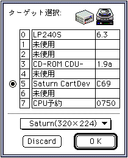
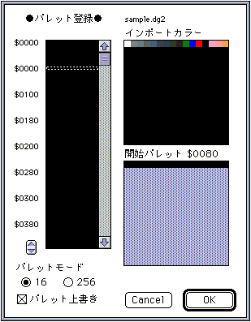
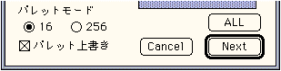
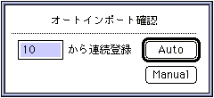
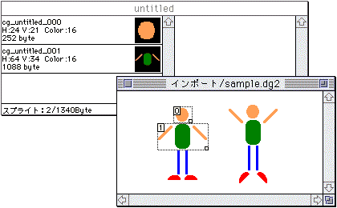
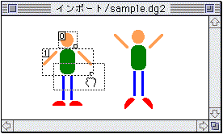
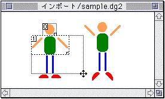
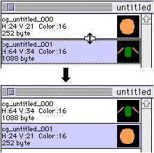
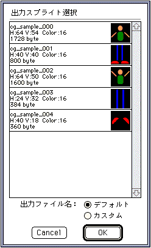
定型スプライトによるパターンを作成するためのデータです。
パターンが持つ「原点」からスプライト各頂点への相対座標でその位置を表わします。
回転したスプライトを持つパターンを作成するためのデータです。
各スプライトに任意の中心点を設定し、パターン原点とこの中心点の相対座標を持ちます。
更にこの中心点とスプライト各頂点との相対座標値と回転角度データによってパターンデータを形成します。
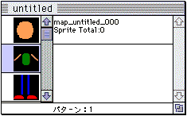
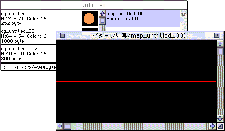
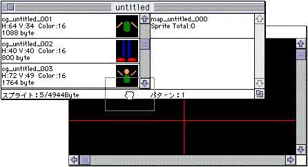
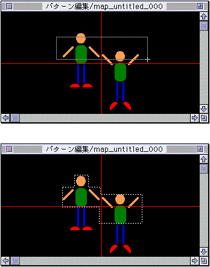
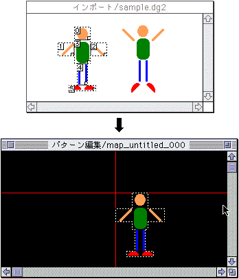
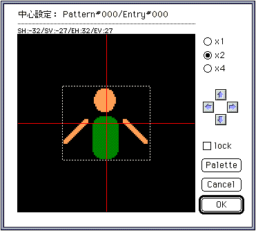
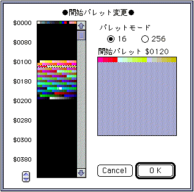
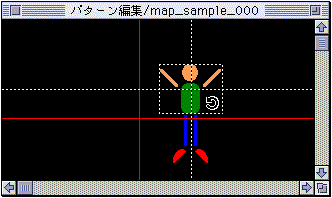
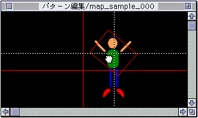
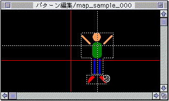
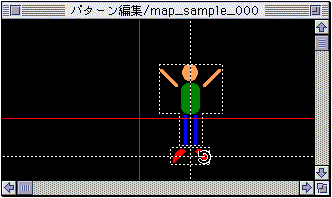
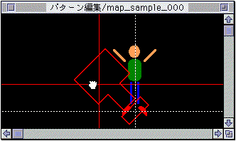
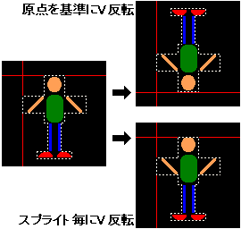
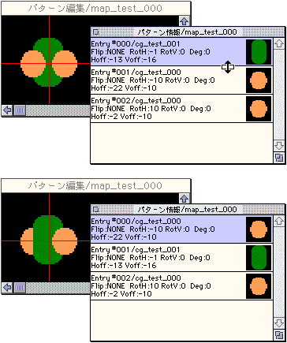
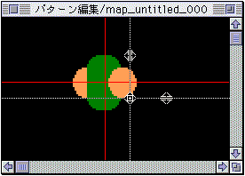
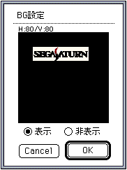
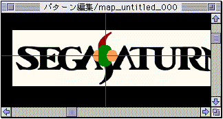
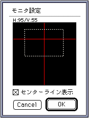
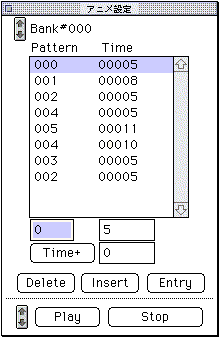
★Graphic Tools Guide
★SpriteEditorユーザーズマニュアル